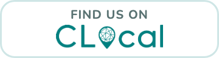

For businesses on CLocal
Add CLocal to your website
Let your customers know where to find your videos. Pick the badge that suits your site, copy the code, and paste it in.
White badge
For light websites.

Teal badge
For dark websites.
Where to paste it
- Squarespace, Wix or Shopify: add a Code or Embed block and paste it in.
- WordPress: add a Custom HTML block.
- The footer of your site is a good spot, next to your Instagram and opening hours.
- Instagram bio or Linktree: just add clocal.co.uk as a link.
Stuck? Email hello@clocal.co.uk and we'll talk you through it.